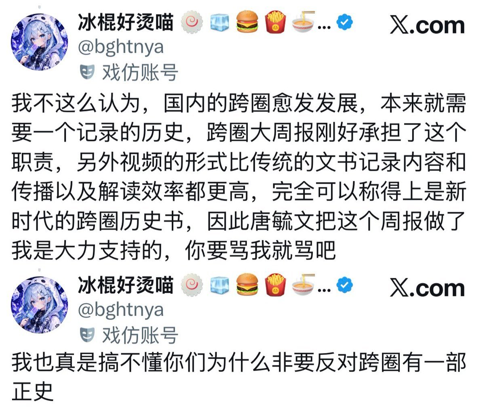

沫柠🍥
@Moningmeng
跨圈的历史，这是一个很大的概念，恶意事件，温暖瞬间，都可以是跨圈历史的一部分
你可以记录某个人今天吃盐了，某个人今天刚开始hrt，某个人今天出柜成功了，甚至是某个人今天把另一个人捅了
但唐的视频并不全面，只是历史的一部分，里面的内容近乎都是负面的。我并不是说不应该记录负面历史，但是这种偏执的带有立场的记录体系绝不应该被称为「新时代的跨圈历史书」
再往下，你说它是「正史」就更不用多说了。这玩意最多就是个负面历史载体，完全不具备史书该有的客观性，它记录的东西根本无法体现整个跨性别群体的发展，也完全不具有代表性
